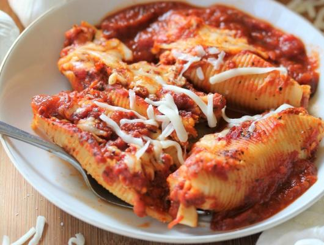

Classic Stuffed Shells
This classic stuffed shells recipe is a warm, comforting Italian-style dish
that is perfect for feeding a crowd.
Ingredients
- 2 boxes (12 oz each) jumbo pasta shells
- 2 jars (24 oz each) marinara sauce
- 32 oz ricotta cheese
- 3 cups shredded mozzarella, divided
- 1 cup grated Parmesan cheese
- 2 large eggs
- 2–3 cloves garlic, minced
- 2 tablespoons fresh parsley (or 1 tablespoon dried)
- 1 teaspoon salt
- 1/2 teaspoon black pepper
- Optional: 1 pound cooked ground beef or sausage
Instructions
-
Cook the shells: Boil the shells in salted water until
just al dente. Drain and let cool enough to handle.
-
Make the filling: In a large bowl, mix together the
ricotta, 2 cups of mozzarella, Parmesan, eggs, garlic, parsley, salt,
and pepper. Stir in cooked meat if using.
-
Assemble: Preheat the oven to 375°F (190°C). Spread a
thin layer of marinara sauce in the bottom of two 9x13-inch baking
dishes. Fill each shell with the cheese mixture and place in the dishes.
Spoon the remaining sauce over the top.
-
Bake: Sprinkle the remaining mozzarella over the shells.
Cover with foil and bake for 25 minutes. Remove the foil and bake
another 10–15 minutes, until bubbly and lightly golden.
-
Serve: Let the dish rest for 5–10 minutes before
serving.
Serving Size
Plan on 3–4 shells per person, for about 35–40 shells total.
Home